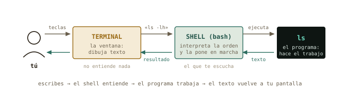
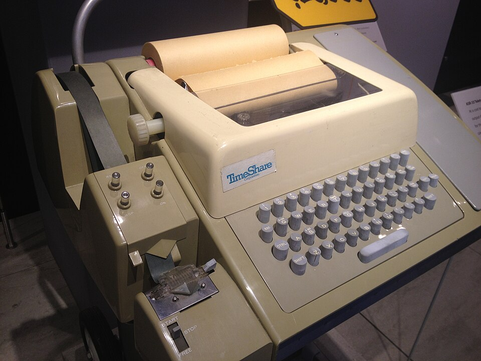
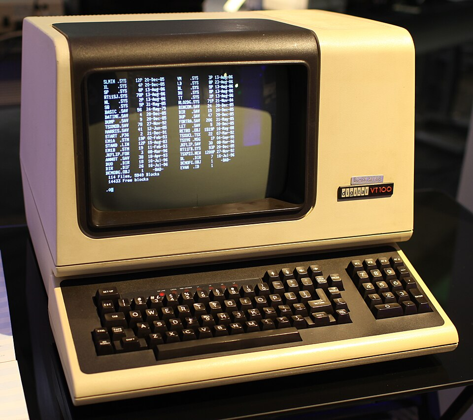
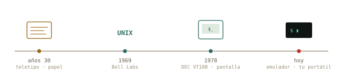
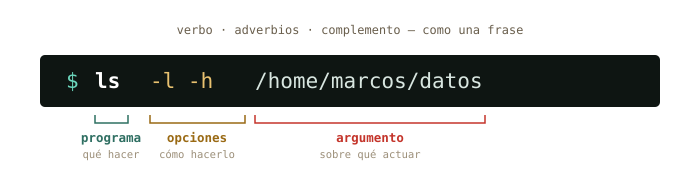
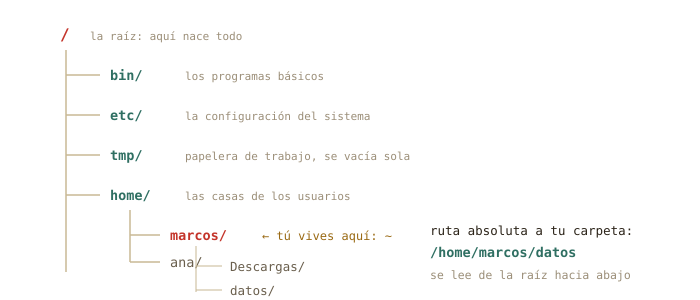
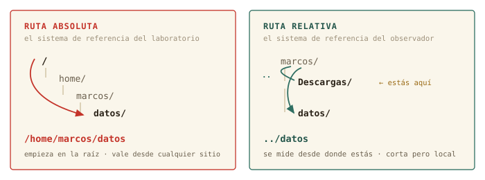
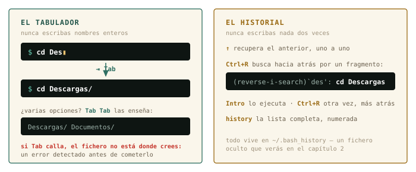
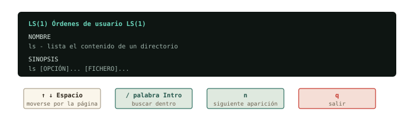

1 Abrir la caja negra
Llevas años usando Linux sin haber hablado nunca con él directamente. Hoy empieza la conversación: qué es realmente esa ventana negra, por qué sigue siendo la herramienta central del cálculo científico medio siglo después, y tus primeros pasos dentro.
Al terminar esta sesión sabrás
- Distinguir terminal, shell y consola (y por qué casi todo el mundo los confunde).
- Leer y escribir la anatomía de cualquier comando: programa, opciones, argumentos.
- Moverte por el árbol de directorios con
pwd,lsycd, con rutas absolutas y relativas. - Usar los dos superpoderes que separan a quien sufre la terminal de quien la disfruta: el tabulador y el historial.
- Pedir ayuda al propio sistema con
many--help, sin salir a internet. - Registrar tu sesión con
script: tu cuaderno de laboratorio de este curso.
1.1 Qué es esto que parpadea
Abre la terminal de tu equipo (en Mint: menú → Terminal, o Ctrl+Alt+T). Verás algo así:
marcos@portatil:~$ ▮Esa línea se llama prompt, y es una frase completa aunque no lo parezca: «soy el usuario marcos, en la máquina portatil, estoy en el directorio ~, y el $ significa que te escucho». Cada símbolo informa. El cursor parpadeante es la pregunta: ¿qué quieres?
Antes de responder, deshagamos una confusión que arrastra todo el mundo. Aquí hay dos programas distintos colaborando, no uno:
| Pieza | Qué es | Analogía de laboratorio |
|---|---|---|
| Terminal | La ventana: dibuja texto, recoge tus teclas. No entiende nada de lo que escribes. | La pantalla del osciloscopio |
| Shell | El intérprete que vive dentro: lee tu orden, la ejecuta, devuelve el resultado. El tuyo se llama bash. |
La electrónica que procesa la señal |
| Consola | Históricamente, el hardware físico conectado a la máquina. Hoy se usa como sinónimo informal. | El instrumento completo sobre la mesa |
Y dos siglas que te perseguirán en toda la documentación, así que estrenémoslas ya: esta forma de trabajar — órdenes de texto — es una CLI (command-line interface, interfaz de línea de comandos); la de ventanas y ratón de todos los días es una GUI (graphical user interface). No son rivales: son dos puertas a la misma casa, y este curso te entrega la que te faltaba.

◷ Historia · Por qué tu terminal se llama tty
En los años 30, mucho antes de los ordenadores, las agencias de noticias transmitían texto con teletipos (teletypewriters, «tty»): máquinas de escribir que enviaban cada tecla por un cable e imprimían lo que llegaba. Cuando en los 60 hubo que hablar con los primeros ordenadores compartidos, nadie diseñó una interfaz nueva: se enchufó el teletipo que ya existía. El ordenador «contestaba» imprimiendo en papel.
Las pantallas sustituyeron al papel en los 70 —el DEC VT100 de 1978 fijó el estándar que tu terminal aún emula— pero el nombre se quedó. Escribe tty en tu terminal y el sistema te dirá qué «teletipo» eres. Hay medio siglo de arqueología funcionando en tu portátil.



◉ Por dentro · ¿Por qué sobrevive una interfaz de los años 60?
No es nostalgia. El texto tiene tres propiedades que ninguna interfaz gráfica iguala: es componible (la salida de un programa puede ser la entrada de otro, lo verás en el capítulo 3), es reproducible (un comando se copia en un correo, un artículo o un script y produce exactamente lo mismo), y viaja bien (manejar un superordenador a 2 000 km por SSH cuesta lo mismo que manejar tu portátil). En física computacional, esas tres propiedades son la diferencia entre un resultado y un resultado reproducible.
1.2 Primeras palabras
Vamos a hablarle. Una regla para todo el curso, y es innegociable: no copies y pegues los comandos — tecléalos. Los dedos aprenden lo que los ojos solo reconocen. Escribe cada línea y pulsa Intro:
marcos@portatil:~$ whoami
marcos
marcos@portatil:~$ date
domingo, 23 de agosto de 2026, 18:04:11 CEST
marcos@portatil:~$ echo "hola, máquina"
hola, máquina
marcos@portatil:~$ tty
/dev/pts/0Cuatro comandos, cuatro respuestas instantáneas. whoami — quién soy. date — qué hora es. echo — repite lo que te digo. tty — qué terminal soy (ahí está el teletipo fantasma). Fíjate en el patrón: escribes una orden, el shell la ejecuta, te devuelve texto, y el prompt reaparece pidiendo la siguiente. Ese ciclo es toda la terminal — y tiene nombre técnico: REPL (read–eval–print loop: leer, ejecutar, imprimir, repetir). No es nuevo para ti: el intérprete de Python, con su >>>, es exactamente otro REPL. Cambia el idioma; el ciclo es el mismo.
¿Y si te equivocas? Prueba a escribir whoami mal a propósito:
marcos@portatil:~$ woami
bash: woami: orden no encontradaNada explota. El shell te dice exactamente qué pasó: no conoce ningún programa con ese nombre. Los mensajes de error de la terminal se leen, no se temen — casi siempre contienen el diagnóstico completo. Aprender a leerlos es la mitad de este curso.
1.3 Anatomía de un comando
Casi todo lo que escribirás en tu vida en una terminal sigue una única gramática de tres piezas:

ls), en formato largo y legible (-l -h), el contenido de esa carpeta (/home/marcos/datos)».
Las opciones empiezan por guion y modifican el comportamiento. Las cortas se pueden agrupar: ls -l -h y ls -lh son idénticos. Muchas tienen versión larga y legible: -h es --human-readable. Los argumentos son el objeto de la acción — normalmente ficheros o carpetas. Si no das argumento, cada programa tiene un valor por defecto razonable: ls a secas lista donde estás.
✚ Truco · Los espacios importan
El shell separa las piezas por espacios. ls-lh (sin espacio) es para él un solo programa llamado «ls-lh», que no existe. Y una carpeta llamada mis datos son dos argumentos salvo que la protejas con comillas: ls "mis datos". Por eso los científicos veteranos nombran todo sin_espacios — adopta la costumbre desde hoy.
1.4 El territorio: moverse por el árbol
Todo el sistema — programas, configuración, tus datos, tus fotos — vive en un único árbol de directorios que nace en la raíz, escrita /. No hay «unidades C: y D:»: todo cuelga del mismo tronco. Tu casa está en /home/tu_usuario, y como es el sitio donde pasarás la vida, tiene apodo: la virgulilla ~.

Tres comandos son tu GPS:
marcos@portatil:~$ pwd
/home/marcos
marcos@portatil:~$ ls
Descargas Documentos Escritorio Imágenes Música Vídeos
marcos@portatil:~$ cd Descargas
marcos@portatil:~/Descargas$ pwd
/home/marcos/Descargaspwd (print working directory) responde «¿dónde estoy?». ls (list) responde «¿qué hay aquí?». cd (change directory) te mueve. Observa que el prompt cambió: ahora dice ~/Descargas. El prompt es tu brújula permanente.
1.4.1 Rutas absolutas y relativas
Hay dos maneras de indicar cualquier lugar del árbol, y la diferencia es idéntica a la de un sistema de referencia en mecánica:
Una ruta absoluta empieza por / y se mide desde la raíz: /home/marcos/datos. Vale desde cualquier sitio, siempre, como unas coordenadas del sistema de laboratorio. Una ruta relativa se mide desde donde estás ahora: si estás en ~, escribir datos basta. Es el sistema de referencia del observador — más corto, pero depende de tu posición.

Dos atajos completan el mapa: .. es «el directorio padre» (un nivel hacia la raíz) y . es «aquí mismo». Y cd tiene dos gestos que usarás mil veces: sin argumentos te lleva a casa desde cualquier lugar, y cd - vuelve al sitio donde estabas justo antes.
marcos@portatil:~/Descargas$ cd ..
marcos@portatil:~$ cd /etc
marcos@portatil:/etc$ cd
marcos@portatil:~$ cd -
/etc
marcos@portatil:/etc$△ Tranquilidad · Hoy no puedes romper nada
Todos los comandos de este capítulo son de solo lectura: miran, no tocan. Aún no sabes borrar ni modificar nada — disfruta de esta era de inocencia mientras dure. Cuando lleguen los comandos con consecuencias (capítulo 2), llegarán también las redes de seguridad.
1.5 Los dos superpoderes
Lo que de verdad separa a quien sufre la terminal de quien la habita no es saber más comandos. Son dos teclas.
1.5.1 El tabulador: nunca escribas nombres enteros
Escribe cd Des y pulsa Tab. El shell completa: cd Descargas/. Si hay varias opciones que empiezan igual, pulsa Tab dos veces y te las muestra todas. Esto no es solo comodidad: si el tabulador no completa, el fichero no está donde crees — acabas de detectar un error antes de cometerlo. El tabulador es tu comprobación experimental continua.
1.5.2 El historial: nunca escribas nada dos veces
La flecha ↑ recupera comandos anteriores, uno a uno. Pero el gesto profesional es Ctrl+R: búsqueda inversa. Púlsalo, teclea un fragmento de cualquier comando que hayas usado («des», por ejemplo), y aparecerá el más reciente que lo contenga. Intro lo ejecuta; Ctrl+R otra vez busca más atrás. El comando history te enseña la lista completa numerada.

◉ Por dentro · Dónde vive tu memoria
El historial no es magia: bash lo va guardando en un fichero oculto llamado .bashhistory… casi: .bash_history, dentro de tu casa. Los ficheros cuyo nombre empieza por punto están ocultos por convención — ls no los muestra salvo que le pidas ls -a (all). Pruébalo en ~: descubrirás docenas de ficheros de configuración que llevan años viviendo contigo sin que los hayas visto. En el capítulo 4 aprenderás qué hacen.
1.6 Pedir ayuda sin salir del sistema
Aquí está la clave de la autonomía, el motivo por el que este curso existe. Ante una duda, el reflejo entrenado es preguntarle a Google o a una IA. Pero tu sistema lleva dentro la documentación completa y exacta de cada comando de tu versión concreta, disponible sin conexión:
marcos@portatil:~$ ls --help
Modo de empleo: ls [OPCIÓN]... [FICHERO]...
Lista información sobre los FICHEROs...
marcos@portatil:~$ man ls--help da el resumen rápido en pantalla. man (manual) abre la página completa en un visor con sus propias teclas: ↑/↓ y Espacio para moverte, / para buscar dentro (escribe el término y Intro; n salta a la siguiente aparición), y q para salir. Esa tecla / convierte cada página de manual en un documento consultable en segundos.

less y para htop — las verás durante todo el curso.
◷ Historia · El manual nació con el sistema
Unix nació en 1969 en los Bell Labs, escrito por Ken Thompson y Dennis Ritchie en un PDP-7 arrinconado — el proyecto oficial de sistema operativo del laboratorio acababa de cancelarse, y ellos siguieron por gusto. En 1971, su jefe puso una condición para comprarles una máquina mejor: que documentaran el sistema. Así nació el Unix Programmer’s Manual, y con él la costumbre, viva 55 años después, de que cada programa lleve su página man. La notación ls(1) que verás por ahí significa «la página de ls en la sección 1 del manual» — la numeración original de 1971.

1.7 Tu cuaderno de laboratorio: script
En el laboratorio no se te ocurriría medir sin cuaderno. En la terminal, tampoco: el comando script graba todo lo que aparezca en pantalla — tus órdenes y las respuestas — en un fichero, hasta que escribas exit.
marcos@portatil:~$ script sesion01.log
Script iniciado, el fichero de anotación es 'sesion01.log'
marcos@portatil:~$ pwd
/home/marcos
marcos@portatil:~$ exit
Script terminado, el fichero de anotación es 'sesion01.log'Desde ahora, cada sesión de este curso empieza con script sesionNN.log y termina con exit. Te servirá para revisar qué hiciste, para preguntar con evidencia («esto es exactamente lo que pasó») — y durante el piloto, esos logs son los datos experimentales con los que mejoraremos el curso. Eres a la vez el físico y el experimento.
1.8 Práctica: la expedición
Sesión de campo. Arranca tu cuaderno (script sesion01.log) y responde a cada pregunta ejecutando comandos, no de memoria. Las soluciones están plegadas: inténtalo de verdad antes de abrirlas.
Ejercicio 1.1 · Reconocimiento del territorio
Ve a la raíz del sistema y lista lo que hay. Después responde: ¿cuántos directorios de primer nivel tiene tu Mint, aproximadamente? ¿Reconoces etc, home y tmp de la Figura 1.6?
cd / y después ls. Verás en torno a 20 entradas: bin boot dev etc home lib ...
Por qué así — También valía ls / directamente, sin moverte — recuerda que ls acepta como argumento cualquier ruta. Dos caminos correctos para lo mismo: en la terminal casi siempre los hay, y ninguno es «el bueno».
Ejercicio 1.2 · Sistemas de referencia
Estás en /home/marcos/Descargas. Escribe dos comandos distintos, uno con ruta relativa y otro con absoluta, que te lleven a /home/marcos/Documentos.
Relativa: cd ../Documentos · Absoluta: cd /home/marcos/Documentos (o el híbrido cd ~/Documentos).
Por qué así — .. sube a /home/marcos y desde ahí baja a Documentos: es el cambio de sistema de referencia pasando por el origen común. La absoluta funciona idéntica estés donde estés — por eso los scripts que escribas en el futuro preferirán rutas absolutas: no dependen de dónde los ejecutes.
Ejercicio 1.3 · Leer al instrumento
Ejecuta ls -lh /etc y elige cualquier línea. Identifica en ella: el tamaño del fichero y su fecha de modificación. ¿Qué crees que aporta la opción -h? Compruébalo repitiendo sin ella.
En una línea como -rw-r--r-- 1 root root 3,0K ago 12 10:33 fstab, el tamaño es 3,0K y la fecha ago 12 10:33. Sin -h, el tamaño aparece en bytes crudos: 3044.
Por qué así — -h es --human-readable: convierte bytes a K, M, G. El resto de la línea (ese -rw-r--r-- y los dos root) es el sistema de permisos y propietarios — protagonista del capítulo 4. Por ahora te basta con saber que está ahí y que significa algo.
Ejercicio 1.4 · La biblioteca responde
Sin usar internet: encuentra en man ls la opción que ordena los ficheros por fecha de modificación, del más reciente al más antiguo. Pista: dentro del visor, la tecla / busca.
man ls, luego /modificación (o /time si tu manual está en inglés) e Intro. La opción es -t. Prueba: ls -lt ~/Descargas — tu descarga más reciente aparece la primera.
Por qué así — Este gesto — man + / — sustituye a la mayoría de búsquedas en Google que hace un principiante. Es más rápido, no requiere conexión, y describe exactamente tu versión del programa, no la de un tutorial de 2019.
Ejercicio 1.5 · Predicción teórica
Sin ejecutarlo todavía: partiendo de /home/marcos, ¿qué imprimirá pwd tras esta secuencia? cd /tmp → cd → cd Descargas → cd .. — Escribe tu predicción, luego compruébala experimentalmente.
/home/marcos.
Por qué así — Paso a paso: cd /tmp te lleva a /tmp; cd sin argumentos, a casa (/home/marcos); cd Descargas, a /home/marcos/Descargas; y .. sube al padre: de vuelta a casa. Si predijiste bien las cuatro, las rutas ya son tuyas. Si no, repite la secuencia mirando el prompt en cada paso: es tu brújula.
Ejercicio 1.6 · Preparando el material de la próxima sesión
Descarga este fichero de medidas — veinte periodos de un péndulo, el clásico de primero: pendulo_medidas.csv. Después, desde la terminal, localízalo: comprueba con ls que está en tu carpeta de descargas, y averigua su tamaño y su fecha con lo aprendido en Sección 1.3.
ls -lh ~/Descargas — y ahí estará pendulo_medidas.csv, con menos de 1K y fecha de hoy. Con ls -lt ~/Descargas saldrá el primero de la lista.
Por qué así — Fíjate en lo que no hemos hecho: abrirlo. Sabes llegar hasta cualquier fichero del sistema, pero aún no sabes mirar dentro desde la terminal. Ese es, exactamente, el primer gesto de la próxima sesión.
1.9 Autocomprobación
Marca una respuesta por pregunta; la corrección es inmediata.
El programa que interpreta tus órdenes y las ejecuta es…
En ls -lt /etc, la pieza /etc es…
-lt y el programa, ls./etc no lleva guion ni es lo primero: es el argumento, el objeto sobre el que actúa ls. Vuelve a la figura de la anatomía del comando.Estás en /home/ana/datos y ejecutas cd ... ¿Dónde acabas?
.. sube exactamente un nivel: al directorio padre... sube un solo nivel: el padre de /home/ana/datos es /home/ana.¿Cuál de estas es una ruta relativa?
/: se mide desde donde estés, como el sistema de referencia del observador./, es absoluta (se mide desde la raíz). ../figuras/fig01.png no empieza por /.Dentro de man ls, ¿qué tecla inicia una búsqueda?
Escribes cd Des, pulsas Tab y no se completa nada. La lectura correcta es…
Autocomprobación (test de la sección 1.9) — Respuestas: 1 b · 2 c · 3 a · 4 b · 5 a · 6 b.
La próxima sesión
Tienes un fichero de medidas esperando en ~/Descargas y todavía no sabes abrirlo, copiarlo ni ponerlo a salvo. En el capítulo 2 los ficheros dejan de ser intocables: aprenderás a leerlos, copiarlos, moverlos y organizarlos en lote, y conocerás el primer comando capaz de destruir — con su red de seguridad correspondiente. Cierra tu cuaderno con exit y guarda sesion01.log: es tu primera medida experimental de este curso.
cap. 1 v0.2 · piloto — anota tiempo real invertido, dudas y erratas junto a tu sesion01.log